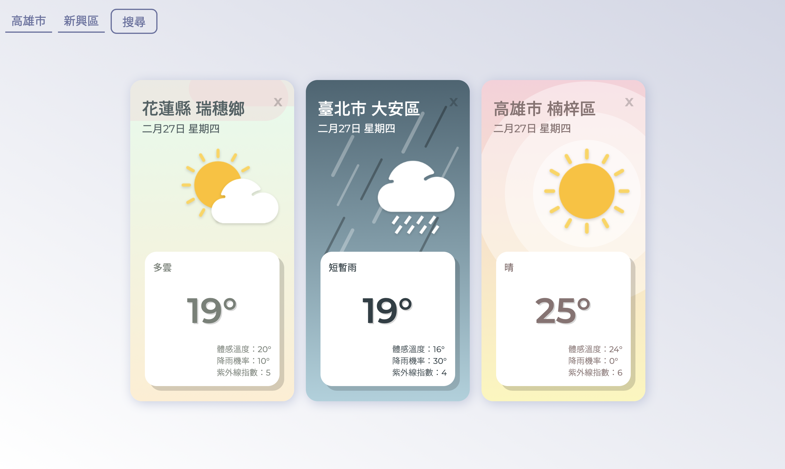

Nutritionlog App

- Use React, Redux, Redux-Promise, Material UI library, d3 library
- Obtained FDA nutrition database by using python web crawler
- Created RESTful API by express
- Operated MySQL by Sequelize
- Implement cookie in application
- Deploy application on AWS EC2
- User can query, create nutrition of ingredient and record daily nutrition
Taiwan Weather

- Vanilla JS, HTML, CSS
- Use API provided by Open Weather Data
Bullet App

- Use React, Redux, Redux-Promise, Material UI library, d3 library
- Obtained FDA nutrition database by using python web crawler
- Created RESTful API by express
- Operated MySQL by Sequelize
- Implement cookie in application
- Deploy application on AWS EC2
- User can query, create nutrition of ingredient and record daily nutrition